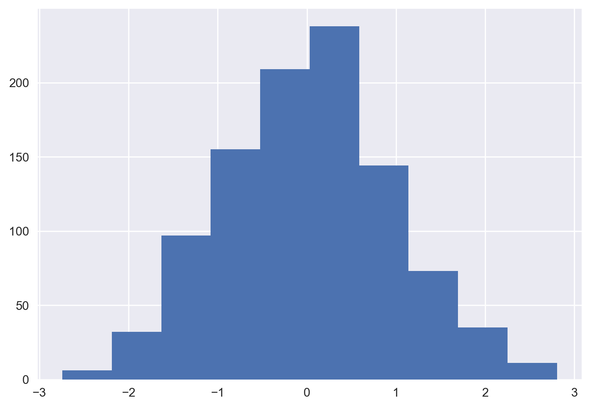
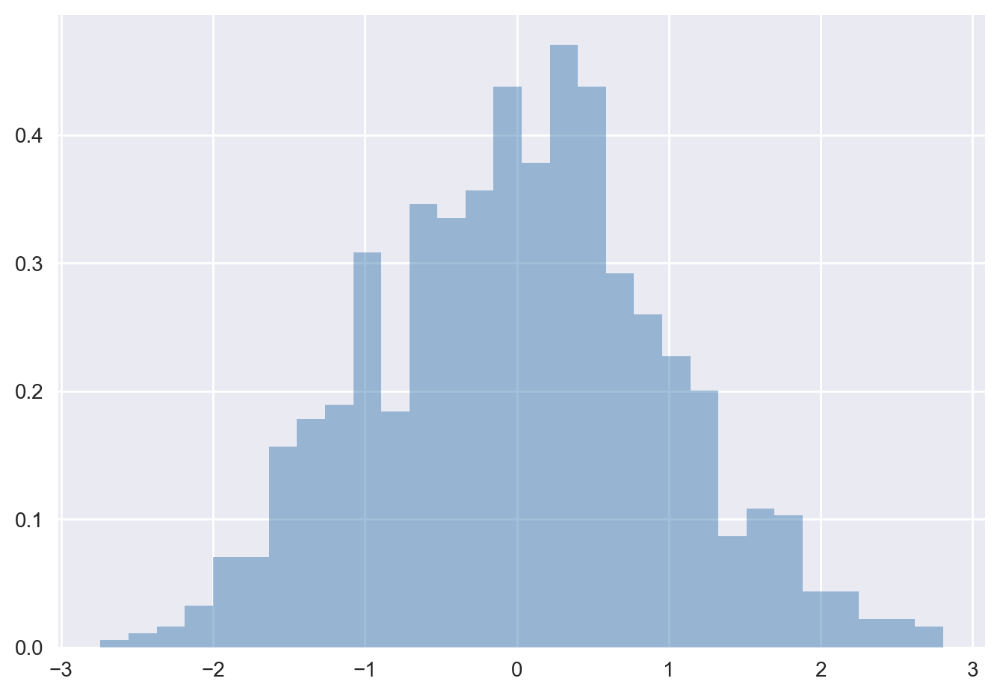
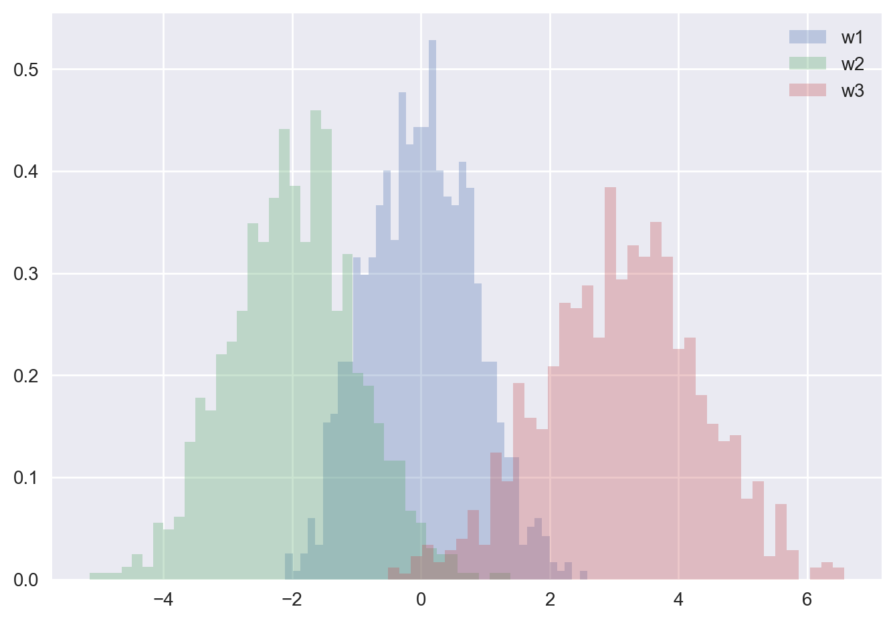
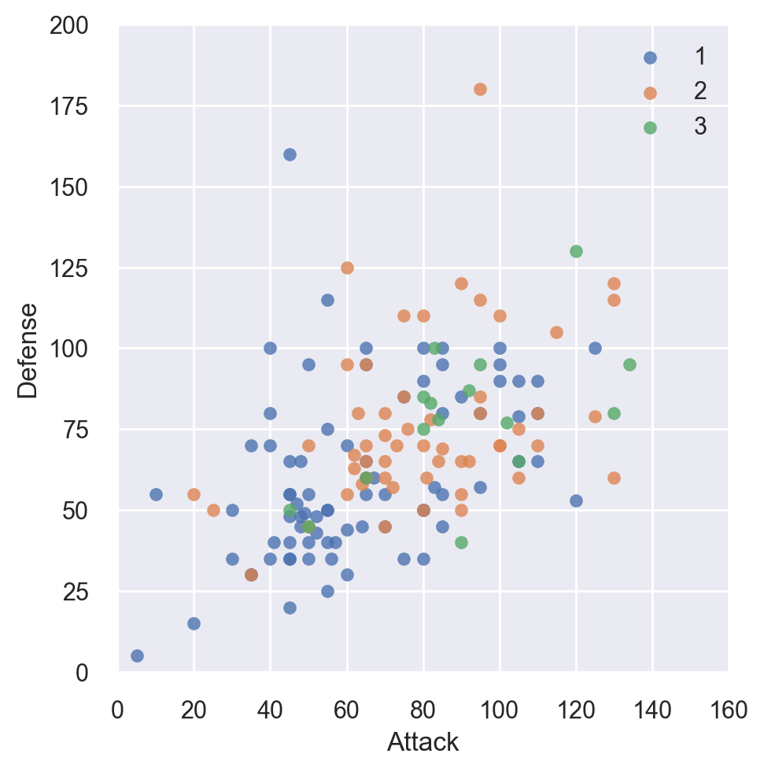

import numpy as np
# Creating a 1D array
arr = np.array([1, 2, 3, 4])
print(arr)[1 2 3 4]
In the first two modules, we gained a foundational understanding of Python programming and the basics of linear algebra, including fundamental subspaces such as row space, column space, and null space, both theoretically and through Python implementations. These essential concepts provided the groundwork for solving linear algebra problems manually and computationally. Now, as we move into Module 3, the focus shifts toward leveraging advanced Python libraries to handle more complex and large-scale computations in linear algebra efficiently.
This module introduces the powerful computational tools available in Python, such as NumPy, SymPy, SciPy, and Matplotlib. These libraries are designed to enhance the ability to perform both numerical and symbolic operations on matrices, vectors, and systems of equations. With NumPy’s high-performance array operations, SymPy’s symbolic computation abilities, and SciPy’s extensive collection of scientific routines, students will be able to compute solutions for real-world problems with ease. The module also incorporates visualization techniques through Matplotlib, allowing students to graphically represent mathematical solutions, interpret data, and communicate their findings effectively. This module empowers students to move beyond manual calculations and explore advanced problem-solving strategies computationally.
In this section, we will introduce NumPy, the core library for scientific computing in Python. NumPy provides support for arrays, matrices, and a host of mathematical functions to operate on these structures. This is particularly useful for linear algebra computations, making it an essential tool in computational mathematics. The library also serves as the foundation for many other Python libraries like SciPy, Pandas, and Matplotlib.
The primary purpose of NumPy is to enable efficient numerical computations involving large datasets, vectors, and matrices. With NumPy, one can perform mathematical operations on arrays and matrices in a way that is highly optimized for performance, both in terms of memory and computational efficiency (Harris et al. 2020).
Some key advantages of using NumPy include:
This section will present several examples of using NumPy array manipulation to access data and subarrays, and to split, reshape, and join the arrays. While the types of operations shown here may seem a bit dry and pedantic, they comprise the building blocks of many other examples used throughout the book. Get to know them well!
We’ll cover a few categories of basic array manipulations here:
numpy to a python programme
Syntax
import numpy as "name of instance"eg: import numpy as np
At the core of NumPy is the ndarray object, which represents arrays and matrices. Here’s how to create arrays using NumPy:
import numpy as np
# Creating a 1D array
arr = np.array([1, 2, 3, 4, 5])
# Creating a 2D matrix
matrix = np.array([[1, 2, 3], [4, 5, 6], [7, 8, 9]])
print("1D Array: \n", arr)
print("2D Matrix: \n", matrix)numpy arraysAs the first step to understand different types of arrays in NumPy let us consider the following examples.
In NumPy, a one-dimensional (1D) array is similar to a list or vector in mathematics. It consists of a single row or column of numbers, making it an ideal structure for storing sequences of values.
import numpy as np
# Creating a 1D array
arr = np.array([1, 2, 3, 4])
print(arr)[1 2 3 4]Here, np.array() is used to create a 1D array (or vector) containing the values [1, 2, 3, 4]. The array represents a single sequence of numbers, and it is the basic structure of NumPy.
A 1D array can represent many things, such as a vector in linear algebra, a list of numbers, or a single dimension of data in a machine learning model.
A two-dimensional (2D) array is equivalent to a matrix in mathematics. It consists of rows and columns and is often used to store tabular data or perform matrix operations.
from IPython.display import display, HTML
# Creating a 2D array (Matrix)
matrix = np.array([[1, 2, 3], [4, 5, 6]])
display(matrix)array([[1, 2, 3],
[4, 5, 6]])In this example, the 2D array (or matrix) is created using np.array() by providing a list of lists, where each list represents a row in the matrix. The result is a matrix with two rows and three columns.
Matrices are fundamental structures in linear algebra. They can represent anything from transformation matrices in graphics to coefficients in systems of linear equations.
Zero arrays are used to initialize matrices or arrays with all elements set to zero. This can be useful when creating placeholder arrays where the values will be computed or updated later.
# Creating an array of zeros
zero_matrix = np.zeros((3, 3))
print(zero_matrix)[[0. 0. 0.]
[0. 0. 0.]
[0. 0. 0.]]The np.zeros() function creates an array filled with zeros. In this example, we create a 3x3 matrix with all elements set to zero.
Zero arrays are commonly used in algorithms that require the allocation of memory for arrays that will be updated later.
An identity matrix is a square matrix with ones on the diagonal and zeros elsewhere. It plays a crucial role in linear algebra, especially in solving systems of linear equations and matrix factorizations.
# Creating an identity matrix
identity_matrix = np.eye(3)
print(identity_matrix)[[1. 0. 0.]
[0. 1. 0.]
[0. 0. 1.]]The np.eye(n) function creates an identity matrix with the specified size. In this case, we create a 3x3 identity matrix, where all diagonal elements are 1, and off-diagonal elements are 0.
The np.arange() function is used to create an array with evenly spaced values within a given range. It’s similar to Python’s built-in ``range() function but returns a NumPy array instead of a list.
# Creating an array using arange
arr = np.arange(1, 10, 2)
print(arr)[1 3 5 7 9]Here, np.arange(1, 10, 2) generates an array of numbers starting at 1, ending before 10, with a step size of 2. The result is [1, 3, 5, 7, 9].
This function is useful when creating arrays for loops, data generation, or defining sequences for analysis.
The np.linspace() function generates an array of evenly spaced values between a specified start and end, with the number of intervals defined by the user.
# Creating an array using linspace
arr = np.linspace(0, 1, 5)
print(arr)[0. 0.25 0.5 0.75 1. ]np.linspace(0, 1, 5) creates an array with 5 evenly spaced values between 0 and 1, including both endpoints. The result is [0. , 0.25, 0.5 , 0.75, 1. ]. :::{.callout-note} ### Use: linspace() is often used when you need a specific number of evenly spaced points within a range, such as for plotting functions or simulating data. :::
The reshape() function changes the shape of an existing array without changing its data. It’s useful when you need to convert an array to a different shape for computations or visualizations.
# Reshaping an array
arr = np.arange(1, 10)
reshaped_arr = arr.reshape(3, 3)
print(reshaped_arr)[[1 2 3]
[4 5 6]
[7 8 9]]In this example, a 1D array with 9 elements is reshaped into a 3x3 matrix using the reshape() method. The data remains the same but is now structured in a 2D form.
Reshaping is critical in linear algebra and machine learning when working with input data of different dimensions.
NumPy’s random module is used to generate arrays with random values. These arrays are useful in simulations, testing algorithms, and initializing variables in machine learning.
# Creating a random array
random_arr = np.random.rand(3, 3)
print(random_arr)[[0.19705953 0.06065811 0.64575091]
[0.46489093 0.37999414 0.83551042]
[0.92891568 0.25886181 0.27714532]]np.random.rand(3, 3) creates a 3x3 matrix with random values between 0 and 1. The rand() function generates random floats in the range \([0, 1)\).
Random arrays are commonly used for initializing weights in machine learning algorithms, simulating stochastic processes, or for testing purposes.
np.array([list of values])np.array([[list of values], [list of values]])np.zeros(shape)
shape is a tuple representing the dimensions (e.g., (3, 3) for a 3x3 matrix).np.eye(n)
n is the size of the matrix.np.arange(start, stop, step)
start is the starting value, stop is the end value (exclusive), and step is the increment.np.linspace(start, stop, num)
start and stop define the range, and num is the number of evenly spaced values.np.reshape(array, new_shape)
array is the existing array, and new_shape is the desired shape (e.g., (3, 4)).np.random.randint(low, high, size)
low and high define the range of values, and size defines the shape of the array.Q1: What is the purpose of using np.array() in NumPy?
Ans: np.array() is used to create arrays in NumPy, which can be 1D, 2D, or multi-dimensional arrays.
Q2: How do you create a 2D array in NumPy?
Ans: A 2D array can be created using np.array([[list of values], [list of values]]).
Q3: What is the difference between np.zeros() and np.eye()?
Ans: np.zeros() creates an array filled with zeros of a specified shape, while np.eye() creates an identity matrix of size n.
Q4: What is the syntax to create an evenly spaced array using np.linspace()?
Ans: The syntax is np.linspace(start, stop, num), where num specifies the number of evenly spaced points between start and stop.
Q5: How can you reshape an array in NumPy?
Ans: Arrays can be reshaped using np.reshape(array, new_shape), where new_shape is the desired shape for the array.
Q6: How do you create a random integer array in a specific range using NumPy?
Ans: You can use np.random.randint(low, high, size) to generate a random array with integers between low and high, and size defines the shape of the array.
Q7: What does the function np.arange(start, stop, step) do?
Ans: It generates an array of values from start to stop (exclusive) with a step size of step.
Q8: What is array broadcasting in NumPy?
Ans: Array broadcasting allows NumPy to perform element-wise operations on arrays of different shapes by automatically expanding the smaller array to match the shape of the larger array.
Q9: How do you generate a zero matrix of size 4x4 in NumPy?
Ans: A zero matrix of size 4x4 can be generated using np.zeros((4, 4)).
Q10: What is the difference between np.arange() and np.linspace()?
Ans: np.arange() generates values with a specified step size, while np.linspace() generates evenly spaced values over a specified range and includes the endpoint.
A tensor is a generalized concept of matrices and vectors. In mathematical terms, tensors are multi-dimensional arrays, and their dimensionality (or rank) is what differentiates them from simpler structures like scalars (rank 0), vectors (rank 1), and matrices (rank 2). A tensor with three dimensions or more is often referred to as a higher-order tensor.
In practical terms, tensors can be seen as multi-dimensional arrays where each element is addressed by multiple indices. Tensors play a significant role in machine learning and deep learning frameworks, where operations on these multi-dimensional data structures are common.
Example: 5 Rank: 0 Shape: ()
Example: [1, 2, 3] Rank: 1 Shape: (3)
Example: [[1, 2, 3], [4, 5, 6]] Rank: 2 Shape: (2, 3)
Example: [[[1, 2, 3], [4, 5, 6]], [[7, 8, 9], [10, 11, 12]]] Rank: 3 Shape: (2, 2, 3)
Example: A 4-D tensor could represent data with shape (n_samples, n_channels, height, width) in image processing.
In NumPy, tensors are represented as multi-dimensional arrays. You can create tensors in a way similar to how you create arrays, but you extend the dimensions to represent higher-order tensors.
Creating a 1D Tensor (Vector)
A 1D tensor is simply a vector. You can create one using np.array():
import numpy as np
vector = np.array([1, 2, 3])
print(vector)[1 2 3]Creating a 2D Tensor (Matrix)
A 2D tensor is a matrix:
matrix = np.array([[1, 2, 3], [4, 5, 6]])
print(matrix)[[1 2 3]
[4 5 6]]Creating a 3D Tensor
To create a 3D tensor (a stack of matrices):
tensor_3d = np.array([[[1, 2, 3], [4, 5, 6]], [[7, 8, 9], [10, 11, 12]]])
print(tensor_3d)[[[ 1 2 3]
[ 4 5 6]]
[[ 7 8 9]
[10 11 12]]]Creating a 4D Tensor
In applications like deep learning, a 4D tensor is often used to represent a batch of images, where the dimensions could be (batch_size, channels, height, width):
tensor_4d = np.random.randint(10, size=(2, 3, 4, 5)) # 2 batches, 3 channels, 4x5 images
print(tensor_4d)[[[[3 0 8 7 9]
[1 5 3 3 5]
[7 1 9 4 0]
[7 7 6 8 3]]
[[6 4 0 3 1]
[7 1 1 4 6]
[1 5 9 3 9]
[4 2 7 3 8]]
[[3 0 5 5 3]
[7 6 5 8 5]
[9 6 1 6 5]
[0 6 5 2 5]]]
[[[0 0 9 3 7]
[9 1 5 9 8]
[8 1 8 9 4]
[6 6 2 9 5]]
[[1 5 5 8 7]
[5 9 8 9 4]
[6 1 2 0 8]
[4 2 3 7 3]]
[[8 2 3 2 5]
[3 4 7 6 3]
[9 2 1 6 9]
[1 9 9 5 9]]]]np.array(object, dtype=None, copy=True, order='K', subok=False, ndmin=0)In the next section we will discuss the various attributes of the NumPy array.
Each array has attributes ndim (the number of dimensions), shape (the size of each dimension), and size (the total size of the array):
To illustrate this attributes, consider the following arrays:
#np.random.seed(0) # seed for reproducibility
x1 = np.random.randint(10, size=6) # One-dimensional array
x2 = np.random.randint(10, size=(3, 4)) # Two-dimensional array
x3 = np.random.randint(10, size=(3, 4, 5)) # Three-dimensional arrayThe array attributes of \(x_3\) is shown below.
print("x3 ndim: ", x3.ndim)
print("x3 shape:", x3.shape)
print("x3 size: ", x3.size)x3 ndim: 3
x3 shape: (3, 4, 5)
x3 size: 60Another useful attribute are the dtype which return the data type of the array , itemsize, which lists the size (in bytes) of each array element, and nbytes, which lists the total size (in bytes) of the array:
print("dtype:", x3.dtype)
print("itemsize:", x3.itemsize, "bytes")
print("nbytes:", x3.nbytes, "bytes")dtype: int32
itemsize: 4 bytes
nbytes: 240 bytesIf you are familiar with Python’s standard list indexing, indexing in NumPy will feel quite familiar. In a one-dimensional array, the \(i^{th}\) value (counting from zero) can be accessed by specifying the desired index in square brackets, just as with Python lists:
To demonstrate indexing, let us consider the one dimensional array:
x1=np.array([8, 5, 4, 7,4,1])The fourth element of x1 can be accessed as
print(x1[3])7Now the second element from the end of the the arrray x1 can be accessed as:
print(x1[-2])4In a multi-dimensional array, items can be accessed using a comma-separated tuple of indices. An example is shown below.
x2=np.array([[3, 3, 9, 2],
[5, 2, 3, 5],
[7, 2, 7, 1]])
print(x2)# list the 2-D array[[3 3 9 2]
[5 2 3 5]
[7 2 7 1]]Now print the third element in the first row, we will use the following code.
x2[0, 2] ## access the element in first row and thrid column9x2[2, -1] ## access the element in the 3rd row and last column1Values can also be modified using any of the above index notation. An example is shown below.
x2[2, -1]=20 ## replace the 3rd row last column element of x2 by 20
print(x2)[[ 3 3 9 2]
[ 5 2 3 5]
[ 7 2 7 20]]NumPy arrays
Keep in mind that, unlike Python lists, NumPy arrays have a fixed type. This means, for example, that if you attempt to insert a floating-point value to an integer array, the value will be silently truncated. Don’t be caught unaware by this behavior!
Just as we can use square brackets to access individual array elements, we can also use them to access subarrays with the slice notation, marked by the colon (:) character. The NumPy slicing syntax follows that of the standard Python list; to access a slice of an array x, use this:
x[start:stop:step]If any of these are unspecified, they default to the values start=0, stop=size of dimension, step=1.
We’ll take a look at accessing sub-arrays in one dimension and in multiple dimensions.
1. One-dimensional subarrays
x = np.arange(0,10)
xarray([0, 1, 2, 3, 4, 5, 6, 7, 8, 9])x[1:6] # first five elementsarray([1, 2, 3, 4, 5])x[5:] # elements after index 5array([5, 6, 7, 8, 9])x[4:7] # middle sub-arrayarray([4, 5, 6])x[::2] # every other element with step 2 (alternate elements)array([0, 2, 4, 6, 8])2. Multi-dimensional subarrays (slicing)
Multi-dimensional slices work in the same way, with multiple slices separated by commas. For example:
# creating a two dimensional array
x2=np.array([[1,2,3],[3,4,5],[5,6,7]])
print(x2)[[1 2 3]
[3 4 5]
[5 6 7]]# selecting first 3 rows and first two columns from x2
print(x2[:3,:2])[[1 2]
[3 4]
[5 6]]print(x2[:3:2,:3:2]) # slice alternate elements in first three rows and first three columns[[1 3]
[5 7]]One commonly needed routine is accessing of single rows or columns of an array. This can be done by combining indexing and slicing, using an empty slice marked by a single colon (:)
For example all the elements in first column can be accessed as:
print(x2[:, 0]) # first column of x2[1 3 5]Despite the nice features of array views, it is sometimes useful to instead explicitly copy the data within an array or a subarray. This can be most easily done with the copy() method.
This concept can be illustrated through an example. Consider the array x2 previously defined:
print(x2)[[1 2 3]
[3 4 5]
[5 6 7]]Now take a copy of a slice of x2 as follows.
# create a copy of subarray and store it with the new name
x2_sub_copy = x2[:2, :2].copy()
print(x2_sub_copy)[[1 2]
[3 4]]Now the changes happend in the copy will not affect the orginal array. For example, replace one element in the copy slice and check how it is refelected in both arrays.
x2_sub_copy[0, 0] = 42
print(x2_sub_copy)[[42 2]
[ 3 4]]print(x2)[[1 2 3]
[3 4 5]
[5 6 7]]Another useful type of operation is reshaping of arrays. The most flexible way of doing this is with the reshape method. There are various approaches in reshaping of arrays. For example, if you want to put the numbers 1 through 9 in a \(3 \times 3\) grid, you can do the following:
np.arange(1, 10)array([1, 2, 3, 4, 5, 6, 7, 8, 9])grid = np.arange(1, 10).reshape((9, 1))
print(grid)[[1]
[2]
[3]
[4]
[5]
[6]
[7]
[8]
[9]]Note that for this to work, the size of the initial array must match the size of the reshaped array. Where possible, the reshape method will use a no-copy view of the initial array, but with non-contiguous memory buffers this is not always the case.
Another common reshaping pattern is the conversion of a one-dimensional array into a two-dimensional row or column matrix. This can be done with the reshape method, or more easily done by making use of the newaxis keyword within a slice operation:
More Examples
x = np.array([1, 2, 3])
print(x)[1 2 3]Now check the dimension of the array created.
x.shape(3,)Reshaping the array as a matrix.
# row vector via reshape
x1=x.reshape((1, 3))
x1.shape(1, 3)We can achieve the same using the newaxis function as shown below.
# row vector via newaxis
print(x[np.newaxis, :])[[1 2 3]]Some other similar operations are here.
# column vector via reshape
x.reshape((3, 1))array([[1],
[2],
[3]])# column vector via newaxis
x[:, np.newaxis]array([[1],
[2],
[3]])All of the preceding routines worked on single arrays. It’s also possible to combine multiple arrays into one, and to conversely split a single array into multiple arrays. We’ll take a look at those operations here.
Concatenation, or joining of two arrays in NumPy, is primarily accomplished using the routines np.concatenate, np.vstack, and np.hstack. np.concatenate takes a tuple or list of arrays as its first argument, as we can see here:
x = np.array([1, 2, 3])
y = np.array([3, 2, 1])
np.concatenate([x, y])array([1, 2, 3, 3, 2, 1])Another example is shown here:
np.concatenate([y, y, y])array([3, 2, 1, 3, 2, 1, 3, 2, 1])It can also be used for two-dimensional arrays:
grid1 = np.array([[1, 2, 3],
[4, 5, 6]])
grid2=np.array([[5,5,5],[7,7,7]])
# concatenate along the first axis
nm=np.concatenate([grid1, grid2],axis=0)
nm.shape
print(nm)[[1 2 3]
[4 5 6]
[5 5 5]
[7 7 7]]Row-wise concatenation is showm below.
# concatenate along the second axis (horrizontal) (zero-indexed)
np.concatenate([grid1, grid2], axis=1)array([[1, 2, 3, 5, 5, 5],
[4, 5, 6, 7, 7, 7]])For working with arrays of mixed dimensions, it can be clearer to use the np.vstack (vertical stack) and np.hstack (horizontal stack) functions:
x = np.array([1, 2, 3])
grid = np.array([[9, 8, 7],
[6, 5, 4]])
# vertically stack the arrays
gridarray([[9, 8, 7],
[6, 5, 4]])Now the new vector x has the same number of columns of grid. So we can only vertically stack it grid. For this the numpy function vstack will be used as follows.
grid2=np.vstack([grid,x])
print(grid2)[[9 8 7]
[6 5 4]
[1 2 3]]Similarly the horrizontal stacking can be shown as follows.
# horizontally stack the arrays
y = np.array([[99],
[99],[3]])
np.hstack([grid2, y])array([[ 9, 8, 7, 99],
[ 6, 5, 4, 99],
[ 1, 2, 3, 3]])The opposite of concatenation is splitting, which is implemented by the functions np.split, np.hsplit, and np.vsplit. For each of these, we can pass a list of indices giving the split points:
Let’s begin with one dimensional arrays. First we split this array at specified locations and save it into sub arrays.
x = [1, 2, 3, 99, 99, 3, 2, 1]Now split the list into two sub lists at index 2
x1,x2=np.split(x,[2])Now see the sub-arrays:
print("the first array is:", x1)
print("the second array is:", x2)the first array is: [1 2]
the second array is: [ 3 99 99 3 2 1]More sub arrays can be created by passing the splitting locations as a list as follows.
x1,x2,x3=np.split(x,[2,4])
print(x1,"\n",x2,'\n',x3)[1 2]
[ 3 99]
[99 3 2 1]Notice that \(N\) split-points, leads to \(N + 1\) subarrays. The related functions np.hsplit and np.vsplit are similar:
Now use the vsplit and hsplit functions on multi dimensional arrays.
grid = np.arange(16).reshape((4, 4))
gridarray([[ 0, 1, 2, 3],
[ 4, 5, 6, 7],
[ 8, 9, 10, 11],
[12, 13, 14, 15]])# vsplit
upper, lower = np.vsplit(grid, [2])
print(upper)
print(lower)[[0 1 2 3]
[4 5 6 7]]
[[ 8 9 10 11]
[12 13 14 15]]#hsplit
left, right = np.hsplit(grid, [2])
print("Left array:\n",left,"\n Right array:\n",right)Left array:
[[ 0 1]
[ 4 5]
[ 8 9]
[12 13]]
Right array:
[[ 2 3]
[ 6 7]
[10 11]
[14 15]]Short Answer Questions (SAQ)
Q1: What is the main purpose of the NumPy library in Python?
Ans: The main purpose of NumPy is to provide support for large, multi-dimensional arrays and matrices, along with a collection of mathematical functions to perform operations on these arrays efficiently.
Q2: How can a 1D array be created in NumPy?
Ans: A 1D array can be created using np.array() function, like:
np.array([1, 2, 3])Q3: How do you access the shape of a NumPy array?
Ans: You can access the shape of a NumPy array using the .shape attribute. For example, array.shape gives the dimensions of the array.
Q4: What does the np.reshape() function do?
Ans: The np.reshape() function reshapes an array to a new shape without changing its data.
Q5: Explain the difference between vstack() and hstack() in NumPy.
Ans: vstack() vertically stacks arrays (along rows), while hstack() horizontally stacks arrays (along columns).
Q6: How does NumPy handle array slicing?
Ans: Array slicing in NumPy is done by specifying the start, stop, and step index like array[start:stop:step], which returns a portion of the array.
Q7: What is the difference between the np.zeros() and np.ones() functions?
Ans: np.zeros() creates an array filled with zeros, while np.ones() creates an array filled with ones.
Q8: What is array broadcasting in NumPy?
Ans: Broadcasting in NumPy allows arrays of different shapes to be used in arithmetic operations by stretching the smaller array to match the shape of the larger array.
Q9: How can you stack arrays along a new axis in NumPy? Ans: You can use np.stack() to join arrays along a new axis.
Q10: How do you generate a random integer array using NumPy?
Ans: You can generate a random integer array using np.random.randint(low, high, size).
Long Answer Questions (LAQ)
Q1: Explain how array slicing works in NumPy.
Ans: Array slicing in NumPy is a method to access or modify a subset of elements from a larger array. The syntax for slicing is array[start:stop:step], where:
start is the index from which slicing begins (inclusive), stop is the index where slicing ends (exclusive), step is the interval between indices to include in the slice. For example, in a 1D array, arr[1:5:2] will return every second element between the indices 1 and 4.
Q2: Discuss the difference between the .reshape() function and the .ravel() function in NumPy.
Ans: The .reshape() function changes the shape of an array without modifying its data, allowing a multi-dimensional array to be flattened or reshaped into any compatible shape. On the other hand, .ravel() returns a flattened 1D version of an array, but it tries to avoid copying the data by returning a flattened view where possible. If modifying the flattened array is necessary, ravel() returns a copy instead.
Q3: Explain how NumPy handles broadcasting during array operations.
Ans: Broadcasting in NumPy is a method to perform element-wise operations on arrays of different shapes. Smaller arrays are “broadcast” across the larger array by repeating their elements to match the shape of the larger array. For example, when adding a scalar to a 2D array, the scalar is added to each element of the array by broadcasting the scalar to match the array’s shape. Similarly, operations between arrays of different shapes follow the broadcasting rules to make them compatible.
Q4: Describe how you would split an array in NumPy using the np.split() function. Provide an example.
Ans: The np.split() function in NumPy divides an array into multiple sub-arrays based on the indices provided. The syntax is: np.split(array, indices) Here, array is the array to be split, and indices is a list of indices where the split will occur. For example:
arr = np.array([1, 2, 3, 4, 5, 6])
np.split(arr, [2, 4]) This splits the array at indices 2 and 4, resulting in three sub-arrays: [1, 2], [3, 4], and [5, 6].
Q5: What are the key differences between np.hsplit() and np.vsplit()? Provide examples.
Ans: np.hsplit() horizontally splits an array along its columns, while np.vsplit() vertically splits an array along its rows. For example, if we have a 2D array:
arr = np.array([[1, 2, 3], [4, 5, 6]]) np.hsplit(arr, 3) splits the array into three columns, each with two rows: [[1], [4]], [[2], [5]], [[3], [6]]. np.vsplit(arr, 2) splits the array into two sub-arrays along rows: [[1, 2, 3]] and [[4, 5, 6]].
Q6: How can you create a 2D array with random integers between 1 and 10 using NumPy? Provide an example.
Ans: A 2D array with random integers between 1 and 10 can be created using np.random.randint(low, high, size). Example:
np.random.randint(1, 10, size=(3, 3))This generates a 3x3 array with random integers between 1 and 9.
Q7: Describe how you would reshape an array from 1D to 2D in NumPy.
Ans: Reshaping an array from 1D to 2D in NumPy can be done using the .reshape() function. For example, given a 1D array:
arr = np.array([1, 2, 3, 4, 5, 6]) To reshape it into a 2D array with 2 rows and 3 columns:
arr.reshape(2, 3)This results in [[1, 2, 3], [4, 5, 6]].
Q8: Explain the concept of stacking arrays in NumPy using np.stack(). Provide an example.
Ans: np.stack() joins arrays along a new axis, unlike hstack() and vstack(), which concatenate along existing axes. For example:
arr1 = np.array([1, 2, 3])
arr2 = np.array([4, 5, 6])
np.stack((arr1, arr2), axis=0)This stacks the arrays along a new axis, resulting in [[1, 2, 3], [4, 5, 6]].
Q9: How does NumPy’s array_split() differ from split()? Provide an example.
Ans: The array_split() function allows unequal splitting of an array, whereas split() requires the splits to result in equal-sized sub-arrays. For example:
arr = np.array([1, 2, 3, 4, 5])
np.array_split(arr, 3)This will split the array into three parts: [1, 2], [3, 4], and [5].
Q10: How would you flatten a multi-dimensional array into a 1D array in NumPy?
Ans: You can flatten a multi-dimensional array using the .ravel() or .flatten() methods. Example using ravel():
arr = np.array([[1, 2], [3, 4]])
arr.ravel()This flattens the array into [1, 2, 3, 4].
Q11: Discuss the importance of NumPy in scientific computing and how it handles large datasets efficiently.
Ans: NumPy is crucial in scientific computing because it provides efficient storage and operations for large datasets through its n-dimensional array objects. It uses continuous memory blocks, making array operations faster than traditional Python lists, and supports a variety of mathematical functions and broadcasting, which simplifies computation.
NumPy operates efficiently by:
Example of large dataset handling:
large_array = np.random.rand(1000000)
sum_large_array = np.sum(large_array) # Efficient summationThis efficiency makes NumPy a foundation for data-driven scientific applications like machine learning, signal processing, and simulations.
Q12: What is the difference between a view and a copy in NumPy? Why does this matter in array operations?
Ans: A view is a reference to the original array, meaning changes in the view will affect the original array. A copy creates a new, independent array.
Example:
arr = np.array([1, 2, 3])
view = arr[:2] # Creates a view
copy = arr[:2].copy() # Creates a copy
view[0] = 99 # This will change arrViews are more memory-efficient, but changes to them affect the original data, whereas copies do not.
Q13: How are higher-dimensional arrays handled in NumPy, and how can they be reshaped and indexed? Provide a practical example.
Ans: Higher-dimensional arrays (tensors) in NumPy can be created and manipulated like 1D and 2D arrays. You can reshape tensors using reshape() and index them similarly, using one index for each dimension.
tensor = np.arange(24).reshape(2, 3, 4) # 3D tensor with shape (2, 3, 4)
element = tensor[1, 2, 3] # Access element at specified indiceswe can reshape tensors:
reshaped_tensor = tensor.reshape(4, 6)NumPy function for Linear AlgrbraLet’s start with some basic matrix operations. Suppose we have two matrices, A and B, and we want to add them together. In NumPy, we can do this with the simple command, A+B. Let’s look into the detailed computational steps.
# Addition and Subtraction
matrix1 = np.array([[1, 2], [3, 4]])
matrix2 = np.array([[5, 6], [7, 8]])
print(matrix1 + matrix2) # prints [[6, 8], [10, 12]][[ 6 8]
[10 12]]Similary, matrix difference and other matrix operations can be illustrated as follows.
print(matrix1 - matrix2) # prints [[-4, -4], [-4, -4]][[-4 -4]
[-4 -4]]# Scalar Multiplication
matrix = np.array([[1, 2], [3, 4]])
print(2 * matrix) # prints [[2, 4], [6, 8]][[2 4]
[6 8]]# Matrix Multiplication
matrix1 = np.array([[1, 2], [3, 4]])
matrix2 = np.array([[5, 6], [7, 8]])
print(np.dot(matrix1, matrix2)) # prints [[19, 22], [43, 50]][[19 22]
[43 50]]# Matrix Hadamards product
matrix1 = np.array([[1, 2], [3, 4]])
matrix2 = np.array([[5, 6], [7, 8]])
print(matrix1*matrix2) [[ 5 12]
[21 32]]# Transpose
matrix = np.array([[1, 2, 3], [4, 5, 6]])
print(np.transpose(matrix)) # prints [[1, 4], [2, 5], [3, 6]][[1 4]
[2 5]
[3 6]]# inverse of a matrix
a = np.array([[1, 2], [3, 4]])
a_inv = np.linalg.inv(a)Next, let’s talk about vectors. A vector is simply a matrix with one column. They’re often used to represent things like forces or velocities in physics. In NumPy, we can represent vectors as arrays with one dimension.
vector = np.array([1, 2, 3])
print(vector) # prints [1, 2, 3][1 2 3]Let’s say we have two vectors, \(\vec{u}\) and \(\vec{v}\), and we want to compute their dot product (i.e., the sum of the products of their corresponding entries). We can do this with the command:
vector1 = np.array([1, 2, 3])
vector2 = np.array([4, 5, 6])
print(np.dot(vector1, vector2)) # prints 3232Like that there are some other operations too.
# Cross Product
vector1 = np.array([1, 2, 3])
vector2 = np.array([4, 5, 6])
print(np.cross(vector1, vector2)) # prints [-3, 6, -3][-3 6 -3]Norm: The norm of a vector is a scalar that represents the “length” of the vector. In NumPy, we can compute the norm using the numpy.linalg.norm function. The inner product of two vectors is a matrix that is computed by multiplying the first vector by the transpose of the second vector. In NumPy, we can compute the inner product using the numpy.inner function.
# finding norm
vector = np.array([1, 2, 3])
print(np.linalg.norm(vector)) # prints 3.741657386773.7416573867739413#finding inner product
vector1 = np.array([1, 2, 3])
vector2 = np.array([4, 5, 6])
print(np.inner(vector1, vector2)) # prints 3232To handle higher dimensional mutrix multiplication, one can use matmul() function. The np.matmul() function is another way to perform matrix multiplication. Unlike np.dot(), it handles higher-dimensional arrays correctly by broadcasting. The syntax for this operation is np.matmul(a, b).
A = np.array([[1, 0], [0, 1]])
B = np.array([[4, 1], [2, 2]])
# Matrix multiplication using matmul
result = np.matmul(A, B)
print(result)[[4 1]
[2 2]]The function np.linalg.inv() computes the inverse of a square matrix. Syntax for this function is np.linalg.inv(a). An example is shown below.
A = np.array([[1, 2], [3, 4]])
# Compute inverse
inv_A = np.linalg.inv(A)
print(inv_A)[[-2. 1. ]
[ 1.5 -0.5]]The np.linalg.det() function computes the determinant of a square matrix. The determinant is useful for solving linear systems and understanding matrix properties. The syntax is np.linalg.det(a).
A = np.array([[1, 2], [3, 4]])
# Compute determinant
det_A = np.linalg.det(A)
print(det_A)-2.0000000000000004The np.linalg.solve() function solves a linear matrix equation or system of linear scalar equations. It finds the vector x that satisfies \(Ax = b\). Syntax for this function is np.linalg.solve(A, b).
A = np.array([[3, 1], [1, 2]])
b = np.array([9, 8])
# Solve system of equations
x = np.linalg.solve(A, b)
print(x)[2. 3.]This function computes the QR decomposition of a matrix. QR decomposition is used to solve linear systems, least squares problems, and compute eigenvalues. Syntax for this function is np.linalg.qr().
A = np.array([[1, 2, 3], [4, 5, 6], [7, 8, 9]])
# QR decomposition
Q, R = np.linalg.qr(A)
print("Q:", Q)
print("R:", R)Q: [[-0.12309149 0.90453403 0.40824829]
[-0.49236596 0.30151134 -0.81649658]
[-0.86164044 -0.30151134 0.40824829]]
R: [[-8.12403840e+00 -9.60113630e+00 -1.10782342e+01]
[ 0.00000000e+00 9.04534034e-01 1.80906807e+00]
[ 0.00000000e+00 0.00000000e+00 -8.88178420e-16]]The np.linalg.lstsq() function solves a linear least-squares problem, which is useful in regression tasks. The syntax for the function is np.linalg.lstsq(a, b, rcond=None).
A = np.array([[1, 1], [1, 2], [2, 2], [2, 3]])
b = np.array([6, 8, 9, 11])
# Least-squares solution
x, residuals, rank, s = np.linalg.lstsq(A, b, rcond=None)
print("Solution:", x)Solution: [2.09090909 2.54545455]The Kronecker product is a matrix operation used in various applications like tensor products and matrix calculus. Syntax for this function is np.kron(a, b).
A = np.array([[1, 2], [3, 4]])
B = np.array([[0, 5], [6, 7]])
kronecker = np.kron(A, B)
print(kronecker)[[ 0 5 0 10]
[ 6 7 12 14]
[ 0 15 0 20]
[18 21 24 28]]Cosine similarity is used to find the cosine of the angle between two vectors. The mathematical formula for this operation is \(\cos \theta=\frac{\vec{a}\cdot \vec{b}}{|\vec{a}\cdot\vec{b}|}\). The python function to calculate the cosine similarity is shown below.
a = np.array([1, 2, 3])
b = np.array([4, 5, 6])
cosine_sim = np.dot(a, b) / (np.linalg.norm(a) * np.linalg.norm(b))
print(cosine_sim)0.9746318461970762NumPyThe np.polyfit() function fits a polynomial of a specified degree to the data, making it useful for regression. Syntax for this function is np.polyfit(x, y, deg). Where \(x\) Independent variable (input), \(y\) is the dependent variable (output) and deg degree of the fitting polynomial. A simple example is given below.
x = np.array([0, 1, 2, 3, 4])
y = np.array([1, 3, 5, 7, 9])
# Linear fit (degree 1)
coefficients = np.polyfit(x, y, 1)
print("Coefficients:", coefficients)Coefficients: [2. 1.]In matrix decomposition, we need the matrix representation, \(A-\lambda I\). For any matrix, we can do this by just A-lambda np.eye(3). This can be deomonstarted here.
A=np.array([[1,2,3],[3,4,5],[7,6,7]])
lamda=3
A-lamda*np.eye(3)array([[-2., 2., 3.],
[ 3., 1., 5.],
[ 7., 6., 4.]])Task: Create a matrix, \(A\) using
numpyand find the covariance , \(cov(A)\) using matrix operation.
# creating a random matrix
import numpy as np
A=np.arange(16).reshape(4,4)
Aarray([[ 0, 1, 2, 3],
[ 4, 5, 6, 7],
[ 8, 9, 10, 11],
[12, 13, 14, 15]])Now find \(A-\bar{A}\).
A_bar=np.mean(A,axis=0) # calculating column-wise sum
A_bararray([6., 7., 8., 9.])# calculating A-A bar with outer product opertation
print(A-np.outer(A_bar,np.ones(4)).T)[[-6. -6. -6. -6.]
[-2. -2. -2. -2.]
[ 2. 2. 2. 2.]
[ 6. 6. 6. 6.]]The same can be done using reshaping method
#calculating A-A_bar using broadcasting
X=A-np.mean(A,axis=0).reshape(1,4)
print(X)[[-6. -6. -6. -6.]
[-2. -2. -2. -2.]
[ 2. 2. 2. 2.]
[ 6. 6. 6. 6.]]Calculating the covariance.
#mannualy calculating covariance
CoV=(1/3)*np.dot(X.T,X)
CoVarray([[26.66666667, 26.66666667, 26.66666667, 26.66666667],
[26.66666667, 26.66666667, 26.66666667, 26.66666667],
[26.66666667, 26.66666667, 26.66666667, 26.66666667],
[26.66666667, 26.66666667, 26.66666667, 26.66666667]])We can verify the same using default function as follows.
#calculating covariance using numpy function
np.cov(A, rowvar=False)array([[26.66666667, 26.66666667, 26.66666667, 26.66666667],
[26.66666667, 26.66666667, 26.66666667, 26.66666667],
[26.66666667, 26.66666667, 26.66666667, 26.66666667],
[26.66666667, 26.66666667, 26.66666667, 26.66666667]])It is interesting to compare the two ways of flattening an array using reshape().
#comparing two ways of flattening a matrix using numpy
A.reshape(-1)==A.reshape(16,)array([ True, True, True, True, True, True, True, True, True,
True, True, True, True, True, True, True])SciPy Library for Computational Linear AlgebraFollowing the comprehensive exploration of the NumPy library, which forms the foundation of array operations and basic linear algebra computations, it is essential to expand into more advanced tools for scientific computing. The SciPy library builds upon NumPy, offering a vast collection of functions and utilities specifically designed for higher-level operations in scientific and technical computing. While NumPy provides efficient array handling and basic matrix operations, SciPy extends these capabilities by incorporating advanced functions for optimization, integration, interpolation, and linear algebra, among other tasks (Virtanen et al. 2020).
For computational linear algebra, SciPy provides specialized modules like scipy.linalg, which can handle everything from solving linear systems to eigenvalue decompositions and matrix factorizations. This transition from NumPy to SciPy enables the handling of more complex problems efficiently and allows users to leverage optimized algorithms for large-scale numerical computations. By integrating SciPy into the workflow, computations can be carried out more robustly, expanding on the basic linear algebra concepts introduced through NumPy with advanced techniques necessary for practical applications.
SciPy builds on the functionality of NumPy, offering more sophisticated and optimized algorithms, particularly suited for numerical computing tasks. While NumPy provides essential operations for linear algebra, SciPy’s scipy.linalg module extends these capabilities with more advanced functions. SciPy functions are often better optimized for large-scale systems, making them highly efficient for computational linear algebra applications.
As the first step to use SciPy, we need to import the (only) necessary submodules for our specific tasks. In our discussion, we consider only linear algebra. So we import the linalg submodule as follows
#import scipy
import numpy as np # for matrix definition
from scipy import linalg
#print(scipy.__version__) # check versionNow let’s discuss various SciPy functions for linear algebra with examples.
The determinant is a scalar value that can be computed from the elements of a square matrix and is often used to determine whether a system of linear equations has a unique solution.
Syntax:
scipy.linalg.det(A)
# example
A = np.array([[1, 2], [3, 4]])
det_A = linalg.det(A)
print(det_A)-2.0Similar functionality is provided by np.linalg.det(). However, scipy.linalg.det() is often preferred when working with very large matrices due to the efficiency of SciPy’s backend implementations.
One of the fundamental tasks in linear algebra is solving a system of linear equations of the form \(AX = b\), where \(A\) is a matrix and \(b\) is a vector or matrix of known values. >Syntax: scipy.linalg.solve(A, b)
#example
A = np.array([[3, 1], [1, 2]])
b = np.array([9, 8])
x = linalg.solve(A, b)
print(x)[2. 3.]NumPy’s np.linalg.solve() also provides this functionality, but SciPy’s version is better suited for larger and more complex matrices because it uses more efficient algorithms for decomposing the matrix.
Matrix inversion is a critical operation in many linear algebra problems, particularly in solving systems of linear equations. >Syntax: scipy.linalg.inv(A)
A = np.array([[1, 2], [3, 4]])
inv_A = linalg.inv(A)
print(inv_A)[[-2. 1. ]
[ 1.5 -0.5]]The Kronecker product is used in various applications, including constructing block matrices and expanding the dimensionality of matrices.
Syntax:
scipy.linalg.kron(A, B)
A = np.array([[1, 2], [3, 4]])
B = np.array([[0, 5], [6, 7]])
kron_product = linalg.kron(A, B)
print(kron_product)[[ 0 5 0 10]
[ 6 7 12 14]
[ 0 15 0 20]
[18 21 24 28]]Eigenvalues and eigenvectors are fundamental in many areas of linear algebra, including solving systems of differential equations and performing dimensionality reduction in machine learning.
Syntax:
scipy.linalg.eig(A)
A = np.array([[3, 2], [4, 1]])
eigenvalues, eigenvectors = linalg.eig(A)
print("Eigenvalues:", eigenvalues)
print("Eigenvectors:", eigenvectors)Eigenvalues: [ 5.+0.j -1.+0.j]
Eigenvectors: [[ 0.70710678 -0.4472136 ]
[ 0.70710678 0.89442719]]Sparse matrices are often useful in numerical simulations dealing with large systems, if the problem can be described in matrix form where the matrices or vectors mostly contains zeros. Scipy has a good support for sparse matrices, with basic linear algebra operations (such as equation solving, eigenvalue calculations, etc.).
There are many possible strategies for storing sparse matrices in an efficient way. Some of the most common are the so-called coordinate form (COO), list of list (LIL) form, and compressed-sparse column CSC (and row, CSR). Each format has some advantages and disadvantages. Most computational algorithms (equation solving, matrix-matrix multiplication, etc.) can be efficiently implemented using CSR or CSC formats, but they are not so intuitive and not so easy to initialize. So often a sparse matrix is initially created in COO or LIL format (where we can efficiently add elements to the sparse matrix data), and then converted to CSC or CSR before used in real calculations.
For more information about these sparse formats, see e.g. http://en.wikipedia.org/wiki/Sparse_matrix
SciPySparse matrices are a key feature of SciPy, providing an efficient way to store and manipulate large matrices with a significant number of zero elements. SciPy offers a variety of sparse matrix formats and supports operations like matrix multiplication, addition, transposition, and solving systems of equations.
Here is a guide to working with sparse matrices in SciPy.
Types of Sparse Matrices in SciPy
SciPy provides different types of sparse matrices depending on the use case:
from scipy.sparse import csr_matrix, csc_matrix, coo_matrix
import numpy as npCreating Sparse Matrices
# Create a dense matrix
dense_matrix = np.array([[0, 0, 3], [4, 0, 0], [0, 5, 6]])
# Convert dense matrix to CSR format
csr = csr_matrix(dense_matrix)
# Display CSR matrix
print(csr)<Compressed Sparse Row sparse matrix of dtype 'int32'
with 4 stored elements and shape (3, 3)>
Coords Values
(0, 2) 3
(1, 0) 4
(2, 1) 5
(2, 2) 6# creating sparse matrix in COO format
# Define row indices, column indices, and values
row = np.array([0, 1, 2, 2])
col = np.array([2, 0, 1, 2])
data = np.array([3, 4, 5, 6])
# Create COO sparse matrix
coo = coo_matrix((data, (row, col)), shape=(3, 3))
print(coo)<COOrdinate sparse matrix of dtype 'int32'
with 4 stored elements and shape (3, 3)>
Coords Values
(0, 2) 3
(1, 0) 4
(2, 1) 5
(2, 2) 6Basic Operations with Sparse Matrices
The basic matrix operations can be performed on the sparse matrix too. The difference is that in the case of sparse matices, the respective operations will be done only on non-zero enties. Now look into the basic matrix operations thorugh following examples.
Matrix Multiplication:
A = csr_matrix([[1, 0, 0], [0, 0, 1], [0, 2, 0]])
B = csr_matrix([[4, 5], [0, 0], [7, 8]])
# Matrix multiplication (dot product)
result = A.dot(B)
print(result.toarray()) # Convert to dense array for display[[4 5]
[7 8]
[0 0]]Transposition:
# Transpose the matrix
transposed = A.transpose()
print(transposed.toarray())[[1 0 0]
[0 0 2]
[0 1 0]]Addition:
# Adding two sparse matrices
C = csr_matrix([[0, 1, 2], [3, 0, 0], [0, 0, 5]])
D = csr_matrix([[0, 1, 0], [0, 0, 0], [2, 0, 5]])
sum_matrix = C + D
print(sum_matrix.toarray())[[ 0 2 2]
[ 3 0 0]
[ 2 0 10]]Solving Sparse Linear Systems
We can solve systems of linear equations using sparse matrices with the spsolve() function:
from scipy.sparse.linalg import spsolve
# Create a sparse matrix (A) and a dense vector (b)
A = csr_matrix([[3, 1, 0], [1, 2, 0], [0, 0, 1]])
b = np.array([5, 5, 1])
# Solve the system Ax = b
x = spsolve(A, b)
print("Solution x:", x)Solution x: [1. 2. 1.]We can convert between different sparse matrix formats using the .tocsc(),.tocoo(), .todia(), and similar methods:
# Convert CSR to COO format
coo = A.tocoo()
print(coo)
print("The matrix is :\n",coo.toarray())<COOrdinate sparse matrix of dtype 'int32'
with 5 stored elements and shape (3, 3)>
Coords Values
(0, 0) 3
(0, 1) 1
(1, 0) 1
(1, 1) 2
(2, 2) 1
The matrix is :
[[3 1 0]
[1 2 0]
[0 0 1]]| Function | Description |
|---|---|
csr_matrix() |
Compressed Sparse Row matrix. |
csc_matrix() |
Compressed Sparse Column matrix. |
coo_matrix() |
Coordinate format matrix. |
spsolve() |
Solves sparse linear systems. |
spdiags() |
Extracts or constructs diagonal sparse matrices. |
lil_matrix() |
List of lists sparse matrix. |
Data visualization libraries in Python empower developers and data scientists to create compelling visual representations of data. Popular libraries include Matplotlib, which offers versatile 2-D plotting capabilities, Seaborn for statistical graphics, Bokeh for interactive web applications, Altair for declarative visualizations, and Plotly for web-based interactive charts and dashboards.
Matplotlib is a powerful Python library that enables developers and data scientists to create a wide range of static, animated, and interactive visualizations. Whether we’re exploring data, presenting insights, or building scientific plots, Matplotlib has we covered. Let’s delve into its features:
Matplotlib is a multi-platform data visualization library built on NumPy arrays, and designed to work with the broader SciPy stack. It was conceived by John Hunter in 2002, originally as a patch to IPython for enabling interactive MATLAB-style plotting via gnuplot from the IPython command line. IPython’s creator, Fernando Perez, was at the time scrambling to finish his PhD, and let John know he wouldn’t have time to review the patch for several months. John took this as a cue to set out on his own, and the Matplotlib package was born, with version 0.1 released in 2003. It received an early boost when it was adopted as the plotting package of choice of the Space Telescope Science Institute (the folks behind the Hubble Telescope), which financially supported Matplotlib’s development and greatly expanded its capabilities.
One of Matplotlib’s most important features is its ability to play well with many operating systems and graphics backends. Matplotlib supports dozens of backends and output types, which means you can count on it to work regardless of which operating system you are using or which output format you wish. This cross-platform, everything-to-everyone approach has been one of the great strengths of Matplotlib. It has led to a large user base, which in turn has led to an active developer base and Matplotlib’s powerful tools and ubiquity within the scientific Python world.
In recent years, however, the interface and style of Matplotlib have begun to show their age. Newer tools like ggplot and ggvis in the R language, along with web visualization toolkits based on D3js and HTML5 canvas, often make Matplotlib feel clunky and old-fashioned. Still, I’m of the opinion that we cannot ignore Matplotlib’s strength as a well-tested, cross-platform graphics engine. Recent Matplotlib versions make it relatively easy to set new global plotting styles , and people have been developing new packages that build on its powerful internals to drive Matplotlib via cleaner, more modern APIs—for example, Seaborn , ggpy, HoloViews, Altair, and even Pandas itself can be used as wrappers around Matplotlib’s API. Even with wrappers like these, it is still often useful to dive into Matplotlib’s syntax to adjust the final plot output. For this reason, I believe that Matplotlib itself will remain a vital piece of the data visualization stack, even if new tools mean the community gradually moves away from using the Matplotlib API directly.
Before we dive into the details of creating visualizations with Matplotlib, there are a few useful things you should know about using the package.
matplotlib moduleJust as we use the np shorthand for NumPy and the pd shorthand for Pandas, we will use some standard shorthands for Matplotlib imports:
import matplotlib.pyplot as plt
plt.style.use('seaborn-whitegrid')
%matplotlib inlineThe plt interface is what we will use most often, as we shall see throughout this chapter.
We will use the plt.style directive to choose appropriate aesthetic styles for our figures. Here we will set the classic style, which ensures that the plots we create use the classic Matplotlib style:
plt.style.use('classic')
plt.style.use('default')
plt.style.use('seaborn')Throughout this section, we will adjust this style as needed. Note that the stylesheets used here are supported as of Matplotlib version 1.5; if you are using an earlier version of Matplotlib, only the default style is available.
A simple example of loading the matplotlib module and setting theme is shown below.
import matplotlib.pyplot as plt
plt.style.use('classic')A visualization you can’t see won’t be of much use, but just how you view your Matplotlib plots depends on the context. The best use of Matplotlib differs depending on how you are using it; roughly, the three applicable contexts are using Matplotlib in a script, in an IPython terminal, or in a Jupyter notebook.
The Jupyter notebook is a browser-based interactive data analysis tool that can combine narrative, code, graphics, HTML elements, and much more into a single executable document.
If you are using Matplotlib from within a script, the function plt.show is your friend. plt.show starts an event loop, looks for all currently active Figure objects, and opens one or more interactive windows that display your figure or figures.
The plt.show command does a lot under the hood, as it must interact with your system’s interactive graphical backend. The details of this operation can vary greatly from system to system and even installation to installation, but Matplotlib does its best to hide all these details from you.
One thing to be aware of: the plt.show command should be used only once per Python session, and is most often seen at the very end of the script. Multiple show commands can lead to unpredictable backend-dependent behavior, and should mostly be avoided.
Using plt.show in IPython’s Matplotlib mode is not required.
Plotting interactively within a Jupyter notebook can be done with the %matplotlib command, and works in a similar way to the IPython shell. You also have the option of embedding graphics directly in the notebook, with two possible options:
%matplotlib inline will lead to static images of your plot embedded in the notebook.%matplotlib notebook will lead to interactive plots embedded within the notebook.For this discussion, we will generally stick with the default, with figures rendered as static images (see the following figure for the result of this basic plotting example):
%matplotlib inlineplt.plot([1,2,3,4])
plt.show()Let’s redraw this plot but now with a title, axis labels, and a legend:
x_vals = [1,2,3,4]
plt.plot(x_vals, label="An awesome line")
plt.ylabel('The y-axis label!')
plt.xlabel('The x-axis label!')
plt.title("The title of the graph!")
plt.legend()
plt.show()
You may be wondering why the x-axis ranges from 0-3 and the y-axis from 1-4. If you provide a single list or array to the plot() command, matplotlib assumes it is a sequence of y values, and automatically generates the x values for you.
plot() is a versatile command, and will take an arbitrary number of arguments. For example, to plot x versus y, you can issue the command:
x_vals = [1,2,3,4]
y_vals = [1, 4, 9, 16]
plt.plot(x_vals, y_vals)
plt.show()More explicit examples are shown below.
import numpy as np
import matplotlib.pyplot as plt
# Compute the x and y coordinates for points on a sine curve
x = np.arange(0, 3 * np.pi, 0.1)
y = np.sin(x)
# Plot the points using matplotlib
plt.plot(x, y)
plt.show() # You must call plt.show() to make graphics appear.import numpy as np
x = np.linspace(0, 10, 100)
fig = plt.figure()
plt.plot(x, np.sin(x), '-')
plt.plot(x, np.cos(x), '--');
plt.show()Now let’s change the theme to seaborn and create more plots with additional features.
plt.style.use('seaborn-v0_8')import numpy as np
fig=plt.figure()
x = np.linspace(0, 10, 100)
plt.plot(x, np.sin(x), 'r-', label=r'$\sin(x)$') # r stands for colour and r in label stands for row text
plt.plot(x, np.cos(x), 'c--', label=r'$\cos(x)$')
plt.title(r'Plots of $\sin(x)$ and $\cos(x)$' )
plt.axis('tight')
plt.legend(frameon=True, loc='upper right', ncol=1,framealpha=.7)
plt.show()One nice feature of Matplotlib is the ability to save figures in a wide variety of formats. Saving a figure can be done using the savefig() command. In savefig(), the file format is inferred from the extension of the given filename. Depending on what backends you have installed, many different file formats are available. The list of supported file types can be found for your system by using the following method of the figure canvas object. Following function return all supported formats.
fig.canvas.get_supported_filetypes(){'eps': 'Encapsulated Postscript',
'jpg': 'Joint Photographic Experts Group',
'jpeg': 'Joint Photographic Experts Group',
'pdf': 'Portable Document Format',
'pgf': 'PGF code for LaTeX',
'png': 'Portable Network Graphics',
'ps': 'Postscript',
'raw': 'Raw RGBA bitmap',
'rgba': 'Raw RGBA bitmap',
'svg': 'Scalable Vector Graphics',
'svgz': 'Scalable Vector Graphics',
'tif': 'Tagged Image File Format',
'tiff': 'Tagged Image File Format',
'webp': 'WebP Image Format'}Note that when saving your figure, it’s not necessary to use plt.show() or related commands discussed earlier.
For example, to save the previous figure as a PNG file, you can run this:
fig.savefig('my_figure.png')To confirm that it contains what we think it contains, let’s use the IPython Image object to display the contents of this file:
from IPython.display import Image
Image('my_figure.png')Matplotlib was originally written as a Python alternative for MATLAB users, and much of its syntax reflects that fact. The MATLAB-style tools are contained in the pyplot (plt) interface. For example, the following code will probably look quite familiar to MATLAB users:
You can create multiple plots within the same figure by using subplot
Let’s consider an example of two plots on same canvas.
import matplotlib.pyplot as plt
import numpy as np
# Create some fake data.
x1 = np.linspace(0.0, 5.0)
y1 = np.cos(2 * np.pi * x1) * np.exp(-x1)
x2 = np.linspace(0.0, 2.0)
y2 = np.cos(2 * np.pi * x2)
plt.plot(x1,y1,label="first graph")
plt.plot(x2,y2,label="second graph")
plt.axis('tight')
plt.legend(frameon=True, loc='upper right', ncol=1,framealpha=.7)
plt.show()Now let’s represent these two plots in seperate subplots as shown below.
fig, (ax1, ax2) = plt.subplots(2, 1)
fig.suptitle('A tale of 2 subplots')
ax1.plot(x1, y1, 'o-')
ax1.set_ylabel('Damped oscillation')
ax2.plot(x2, y2, '.-')
ax2.set_xlabel('time (s)')
ax2.set_ylabel('Undamped')
plt.show()Another approach is shown below.
plt.subplot(2, 1, 1)
plt.plot(x1, y1, 'o-')
plt.title('A tale of 2 subplots')
plt.ylabel('Damped oscillation')
plt.subplot(2, 1, 2)
plt.plot(x2, y2, '.-')
plt.xlabel('time (s)')
plt.ylabel('Undamped')
plt.show()Another example is shown below.
# First create a grid of plots
# ax will be an array of two Axes objects
plt.style.use('default')
fig, ax = plt.subplots(2)
# Call plot() method on the appropriate object
ax[0].plot(x, np.sin(x),'r--',label=r'$\sin x$')
ax[0].set_title(r'$\sin $ graph')
ax[1].set_xlabel("x values")
ax[0].set_ylabel(r'$y=\sin x$')
ax[1].plot(x, np.cos(x),'g-',label=r'$\cos x$')
ax[1].set_ylabel(r'$y=\cos x$')
plt.axis('tight')
plt.legend(frameon=True, loc='upper right', ncol=1,framealpha=.7)
plt.show()Another commonly used plot type is the simple scatter plot, a close cousin of the line plot. Instead of points being joined by line segments, here the points are represented individually with a dot, circle, or other shape. We’ll start by setting up the notebook for plotting and importing the functions we will use:
import numpy as np
x = np.linspace(0, 10, 100)
fig = plt.figure()
plt.plot(x, np.sin(x), '-o', label=r'$\sin(x)$',)
plt.plot(x, np.cos(x), 'p', label=r'$\cos(x)$')
plt.title('Plots of $\sin(x)$ and $\cos(x)$' )
plt.axis('tight')
plt.legend(frameon=True, loc='upper right', ncol=1,framealpha=.7)
plt.show()<>:6: SyntaxWarning: invalid escape sequence '\s'
<>:6: SyntaxWarning: invalid escape sequence '\s'
C:\Users\SIJUKSWAMY\AppData\Local\Temp\ipykernel_12352\3327894231.py:6: SyntaxWarning: invalid escape sequence '\s'
plt.title('Plots of $\sin(x)$ and $\cos(x)$' )A second, more powerful method of creating scatter plots is the plt.scatter function, which can be used very similarly to the plt.plot function:
The primary difference of plt.scatter from plt.plot is that it can be used to create scatter plots where the properties of each individual point (size, face color, edge color, etc.) can be individually controlled or mapped to data.
Let’s show this by creating a random scatter plot with points of many colors and sizes. In order to better see the overlapping results, we’ll also use the alpha keyword to adjust the transparency level:
rng = np.random.RandomState(42)
x = rng.randn(100)
y = rng.randn(100)
colors = rng.rand(100)
sizes = 1000 * rng.rand(100)
plt.scatter(x, y, c=colors, s=sizes, alpha=0.3,
cmap='viridis',label=" Random Y values")
plt.xlabel('Random x values')
plt.ylabel('Random y values')
plt.title('Bubble plot' )
plt.colorbar(); # show color scaleA simple histogram can be a great first step in understanding a dataset.
%matplotlib inline
import numpy as np
import matplotlib.pyplot as plt
plt.style.use('seaborn-v0_8')
data = np.random.randn(1000)
plt.hist(data)(array([ 5., 15., 64., 162., 260., 231., 157., 83., 20., 3.]),
array([-3.24493903, -2.59784095, -1.95074287, -1.30364479, -0.65654671,
-0.00944863, 0.63764945, 1.28474752, 1.9318456 , 2.57894368,
3.22604176]),
<BarContainer object of 10 artists>)
The hist() function has many options to tune both the calculation and the display; here’s an example of a more customized histogram:
plt.hist(data, bins=30, density=True, alpha=0.5,
histtype='stepfilled', color='steelblue',
edgecolor='none');
The plt.hist docstring has more information on other customization options available. This combination of histtype=‘stepfilled’ along with some transparency alpha to be very useful when comparing histograms of several distributions:
w1 = np.random.normal(0, 0.8, 1000)
w2 = np.random.normal(-2, 1, 1000)
w3 = np.random.normal(3, 1.2, 1000)
kwargs = dict(histtype='stepfilled', alpha=0.3, density=True, bins=40)
plt.hist(w1, **kwargs,label='w1')
plt.hist(w2, **kwargs,label='w2')
plt.hist(w3, **kwargs,label='w3')
plt.legend()
Consider the pokemon dataset for this job. The main featurs of this dataset are:
Defense: This column represents the base damage resistance against normal attacks. Higher values indicate that the Pokémon can withstand more physical damage.
Sp. Atk (Special Attack): This column shows the base modifier for special attacks. Pokémon with higher Special Attack values can deal more damage with special moves.
Sp. Def (Special Defense): This column indicates the base damage resistance against special attacks. Higher values mean the Pokémon can better resist damage from special moves.
Speed: This column determines which Pokémon attacks first in each round. Pokémon with higher Speed values will generally attack before those with lower values.
Stage: This column represents the evolutionary stage of the Pokémon. It typically ranges from 1 to 3, with 1 being the base form and 3 being the final evolved form. Some Pokémon may have additional stages, such as Mega Evolutions or Gigantamax forms.
Legendary: This is a boolean column that identifies whether the Pokémon is legendary. It is marked as True for legendary Pokémon and False for non-legendary ones.
These columns provide valuable insights into the strengths and characteristics of each Pokémon, helping players strategize and build their teams effectively. 🌟
Now, let’s read our data into a Pandas dataframe. We will relax the limit on display columns and rows using the set_option() method in Pandas:
import pandas as pd
pd.set_option('display.max_columns', None)
pd.set_option('display.max_rows', None)df=pd.read_csv("https://raw.githubusercontent.com/sijuswamy/PyWorks/main/Pokemon.csv",encoding = 'utf_8')
df.head()| Name | Type 1 | Type 2 | Total | HP | Attack | Defense | Sp.Atk | Sp.Def | Speed | Stage | Legendary | |
|---|---|---|---|---|---|---|---|---|---|---|---|---|
| 0 | Bulbasaur | Grass | Poison | 318 | 45 | 49 | 49 | 65 | 65 | 45 | 1 | False |
| 1 | Ivysaur | Grass | Poison | 405 | 60 | 62 | 63 | 80 | 80 | 60 | 2 | False |
| 2 | Venusaur | Grass | Poison | 525 | 80 | 82 | 83 | 100 | 100 | 80 | 3 | False |
| 3 | Charmander | Fire | Poison | 309 | 39 | 52 | 43 | 60 | 50 | 65 | 1 | False |
| 4 | Charmeleon | Fire | NaN | 405 | 58 | 64 | 58 | 80 | 65 | 80 | 2 | False |
Since the Legendary feature contains the string True and False. But they are part of the logical data type in python. So let’s replace these values with TRUE and FALSE strings as follows.
booleanDictionary = {True: 'TRUE', False: 'FALSE'}
df = df.replace(booleanDictionary)
df.head()| Name | Type 1 | Type 2 | Total | HP | Attack | Defense | Sp.Atk | Sp.Def | Speed | Stage | Legendary | |
|---|---|---|---|---|---|---|---|---|---|---|---|---|
| 0 | Bulbasaur | Grass | Poison | 318 | 45 | 49 | 49 | 65 | 65 | 45 | 1 | FALSE |
| 1 | Ivysaur | Grass | Poison | 405 | 60 | 62 | 63 | 80 | 80 | 60 | 2 | FALSE |
| 2 | Venusaur | Grass | Poison | 525 | 80 | 82 | 83 | 100 | 100 | 80 | 3 | FALSE |
| 3 | Charmander | Fire | Poison | 309 | 39 | 52 | 43 | 60 | 50 | 65 | 1 | FALSE |
| 4 | Charmeleon | Fire | NaN | 405 | 58 | 64 | 58 | 80 | 65 | 80 | 2 | FALSE |
Creating a histogram
We can generate a histogram for any of the numerical columns by calling the hist() method on the plt object and passing in the selected column in the data frame. Let’s do this for the speed column, which corresponds to speed of the player.
plt.hist(df['Speed'])
plt.xlabel('Speed in minutes')
plt.ylabel('Frequency')
plt.title('Histogram of player speed')
plt.show()Scatterplot of Attack vs HP
To generate a scatter plot in Matplotlib, we simply use the scatter() method on the plt object. Let’s also label the axes and give our plot a title:
plt.scatter(df['Attack'], df['HP'])
plt.title('Attack vs. HP')
plt.show()Barchart
Bar charts are another useful visualization tool for analyzing categories in data. To visualize categorical columns, we first should count the values. We can use the counter method from the collections modules to generate a dictionary of count values for each category in a categorical column. Let’s do this for the Legendary column.
from collections import Counter
print(Counter(df[('Legendary')]))Counter({'FALSE': 147, 'TRUE': 4})We can filter this dictionary using the most_common method. Let’s look at the 10 most common nationality values (you can also use the least_common method to analyze infrequent nationality values)
Legendary_dict = dict(Counter(df[('Legendary')]).most_common(2))
plt.bar(Legendary_dict.keys(), Legendary_dict.values())
plt.xlabel('Legendary')
plt.ylabel('Frequency')
plt.title('Bar Plot of Ten Most Common Legendary')
#plt.xticks(rotation=90)
plt.show()Generating Pie Charts With Matplotlib
Pie charts are a useful way to visualize proportions in your data. So first wee need to create the dictionary of propotion then feed it to the pie chart.
prop = dict(Counter(df['Legendary']))
for key, values in prop.items():
prop[key] = (values)/len(df)*100
print(prop){'FALSE': 97.35099337748345, 'TRUE': 2.6490066225165565}fig1, ax1 = plt.subplots()
ax1.pie(prop.values(), labels=prop.keys(), autopct='%1.1f%%',
shadow=True, startangle=0)
ax1.axis('equal') # Equal aspect ratio ensures that pie is drawn as a circle.
plt.show()Box plots Box plots are helpful in visualizing the statistical summaries. The following code demonstrate the way of creating the box plot.
plt.title("Five point summary of Speed")
plt.boxplot(df['Speed'],patch_artist=True, notch=True,labels=['Speed'])
plt.show()C:\Users\SIJUKSWAMY\AppData\Local\Temp\ipykernel_12352\1029903557.py:2: MatplotlibDeprecationWarning: The 'labels' parameter of boxplot() has been renamed 'tick_labels' since Matplotlib 3.9; support for the old name will be dropped in 3.11.
plt.boxplot(df['Speed'],patch_artist=True, notch=True,labels=['Speed'])Seaborn is a library built on top of Matplotlib that enables more sophisticated visualization and aesthetic plot formatting. Once you’ve mastered Matplotlib, you may want to move up to Seaborn for more complex visualizations.
For example, simply using the Seaborn set() method can dramatically improve the appearance of your Matplotlib plots. Let’s take a look.
First, import Seaborn as sns and reformat all of the figures we generated. At the top of your script, write the following code and rerun:
import seaborn as sns
sns.set()
plt.show()To regenerate our histogram of the overall column, we use the histplot method on the Seaborn object:
sns.histplot(df['Speed'],kde=True)
plt.xlabel('Speed in minutes')
plt.ylabel('Frequency')
plt.title('Histogram of player speed')
plt.show()Now let’s modify the histogtram by including the feature Legendary.
sns.histplot(x='Speed',hue='Legendary',kde=True,data=df)
plt.xlabel('Speed in minutes')
plt.ylabel('Frequency')
plt.title('Histogram of player speed')
plt.show()Seaborn also makes generating scatter plots straightforward. Let’s recreate the scatter plot from earlier:
sns.scatterplot(x='Attack', y='HP',hue='Legendary',data=df)
plt.title('Attack vs. HP')
plt.show()In the similar way, let’s compare the Attack and Defense stats for our Pokémon over Stages
# Plot using Seaborn
sns.lmplot(x='Attack', y='Defense', data=df,
fit_reg=False, legend=False,
hue='Stage')
# Tweak using Matplotlib
plt.ylim(0, 200)
plt.xlim(0, 160)
plt.legend(loc='upper right')
plt.show()
Now let’s witness the power of seaboran in creating boxplots of all numerical features in single line of code!
# Boxplot
plt.figure(figsize=(8,6)) # Set plot dimensions
sns.boxplot(data=df)
plt.show()numpy.matmul(A, B) or A @ B for matrix multiplication and numpy.multiply(A, B) for element-wise multiplication.numpy.linalg.det(A) to find the determinant.numpy.dot() and numpy.matmul() with suitable examples.
numpy.linalg.cond(A) to calculate the condition number.numpy.linalg.norm and divide each row by its norm.numpy.transpose(A) or A.T.numpy.linalg.inv(A) for the inverse and numpy.matmul() to check the identity property.numpy.trace(A) to compute the trace.A[:2, -2:].Explain the difference between solving \(Ax = b\) using numpy.linalg.solve() and directly computing \(A^{-1}b\). Which method is computationally more efficient?
- Hint: Discuss how numpy.linalg.solve(A, b) avoids explicitly calculating the inverse of \(A\), making it more efficient.
Write the NumPy methods for (a) outer product and (b) inner product with suitable examples.
- Hint: Use numpy.outer(a, b) for the outer product and numpy.inner(a, b) for the inner product. Example: \(a = [1, 2]\) and \(b = [3, 4]\).
What is the pseudo-inverse of a matrix? Write the Python code chunk to solve a system of linear equations \(Ax = b\), where \(A = \begin{bmatrix} 2 & 3 \\ -1 & 3 \\ 2 & 4 \end{bmatrix}\) and \(b = \begin{bmatrix} 1 \\ 2 \\ 3 \end{bmatrix}\), using the pseudo-inverse. Justify the reason for using the pseudo-inverse instead of \(A^{-1}\).
- Hint: The pseudo-inverse is computed using the Moore-Penrose method (numpy.linalg.pinv). It is useful for non-square or rank-deficient matrices.
Explain various array concatenation routines from the NumPy library with suitable examples.
- Hint: Use numpy.concatenate, numpy.vstack, numpy.hstack, and numpy.dstack to merge arrays along different axes.
Describe the major differences between NumPy and SymPy in advanced linear algebra operations.
- Hint: NumPy focuses on numerical computations with high performance, while SymPy provides symbolic computation and exact results.
Demonstrate the use of numpy.linalg.norm to compute different norms of a matrix \(A = \begin{bmatrix} 1 & 2 \\ 3 & 4 \end{bmatrix}\).
- Hint: Use ord='fro' for the Frobenius norm, ord=1 for the 1-norm, and ord=np.inf for the infinity norm.
What is the Kronecker product of two matrices? Find the Kronecker product of \(A = \begin{bmatrix} 1 & 2 \\ 3 & 4 \end{bmatrix}\) and \(B = \begin{bmatrix} 0 & 5 \\ 6 & 7 \end{bmatrix}\) using NumPy.
- Hint: Use numpy.kron(A, B) to compute the Kronecker product.
Explain how sparse matrices are represented in SciPy. Provide examples of common formats such as CSR, COO, and CSC.
- Hint: Use scipy.sparse.csr_matrix, scipy.sparse.coo_matrix, and scipy.sparse.csc_matrix for different formats.
Write Python code to compute the determinant and rank of a matrix \(A = \begin{bmatrix} 5 & 2 \\ 1 & 4 \end{bmatrix}\) using NumPy.
- Hint: Use numpy.linalg.det(A) for determinant and numpy.linalg.matrix_rank(A) for rank.
What are broadcasting rules in NumPy? Explain with examples how broadcasting simplifies matrix operations.
- **Hint**: Broadcasting allows element-wise operations on arrays of different shapes. Example: Adding a scalar to a matrix.Illustrate the computation of eigenvalues and eigenvectors of \(A = \begin{bmatrix} 6 & 2 \\ 2 & 3 \end{bmatrix}\) using NumPy.
numpy.linalg.eig(A) to compute eigenvalues and eigenvectors.